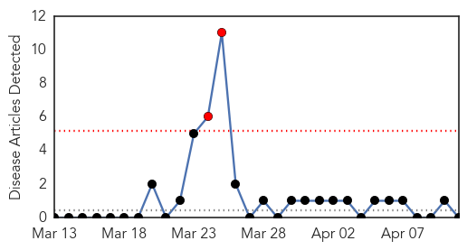
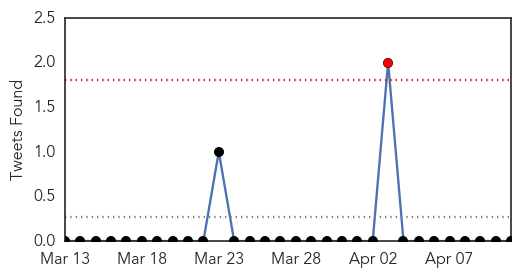

Hemmorhagic Fever
30-Day Web Trend
2 alerts, 0 warnings

30-Day Twitter Trend
Article Locations


Article Confidences

Top Articles:
-
No articles found for Apr 11, 2014
Top Tweets:
-
No tweets found for Apr 11, 2014
Influenza
30-Day Web Trend
1 alerts, 0 warnings

30-Day Twitter Trend
1 alerts, 0 warnings

Article Locations


Article Confidences

Top Articles:
- 0.996
- The Voice of Russia: News, Breaking news, Politics, Economics, Business, Russia, International current events, Expert opinion, podcasts, Video
- 0.976
- Tamiflu effectiveness questioned by scientists
- 0.951
- Lassa virus on flight raises questions about spread of disease
- 0.919
- The 5 Mutations H5N1 Bird Flu Needs to Cause a Global Epidemic
- 0.900
- 'Toxic' flu drug to be reviewed by drugs regulator
- 0.846
- NIH funds center for flu research, surveillance
- 0.815
- Five Mutations can make the Bird Flu Airborne
- 0.801
- Only 5 mutations needed to make bird flu more contagious, study says
- 0.762
- National Institutes of Health awards Mount Sinai contract to further influenza research
- 0.756
- National Institutes of Health Awards Mount Sinai Contract to Further Influenza Research
- 0.728
- Scientists Publish Recipe For Making Bird Flu More Contagious
- 0.728
- Deadly H5N1 bird flu needs just 5 mutations to spread easily in people
- 0.520
- Tamiflu is no better than a placebo, researchers say
Top Tweets:
-
No tweets found for Apr 11, 2014